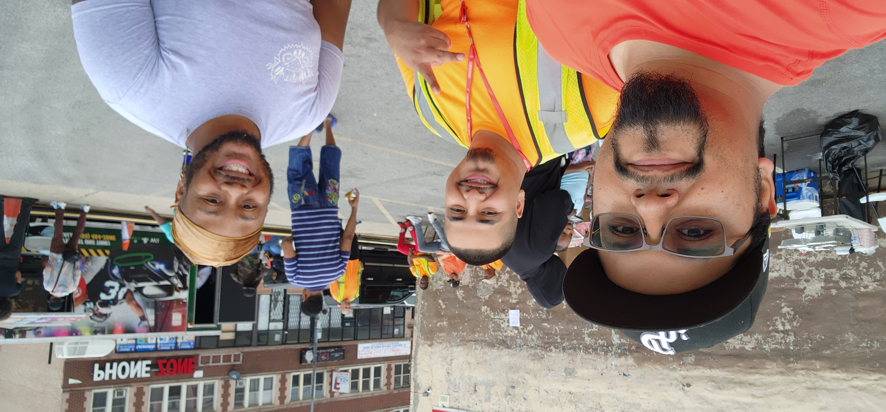

March 7, 2023
Rafael Agosto lives in Little Village but grew up in the Gage Park and Chicago Lawn area. He currently works as a Case Manager for SWOPs (Southwest Organizing Project) safety team CP4P (Communities Partnering 4 Peace) and uses that time to seek out apprenticeship programs, trade programs and opportunities for individuals to go back to school and get their GED. “We work with high-risk individuals who are more likely to fall into risky situations and try to guide them away from that life.” Rafael stated. He also spoke of how they provide victim assistance and mental health assistance to help them through hardships they may have faced. Rafael describes this method as a circle of healing, where they work with the perpetrators and the victims to try to get everyone in a better state of mind.
When asked about why this work is important to him, Rafael tells the story of how he wishes they had resources like CP4P in his youth because it may have saved some of the friends he has lost. He states that he would like to go back to his community and help those that are still trying to find their way in this world and change the younger generation's perspective on why they should get an education or work in a trade. “I want them to realize that they could be anything they want if they find a way to utilize their time wisely. They can be the next electrician, barber, truck driver, etc. I want people who feel like they are stuck to know that they can move on.”
Rafael says he is focused on setting up a digital resource book so that SWOP staff can utilize all the resources across CP4P and SWOP so that they can continue to change people's lives on a personal level. He expresses that he would like for participants to be able to want these things for themselves. “We need to be able to talk to the high-risk individuals in our environment and get them to realize there is other ways to make money without putting themselves at risk.” When asked what their leaders and partners could do to help, Rafael commented that he would ask them to continue to do the groundwork, talk to the young people who need help and direct them toward resources and opportunities that could change the trajectory of their lives forever.
In his final thoughts, Rafael states that he hopes to encounter people who he has helped and see them doing similar work to what he has done. He hopes to pass the torch so that others can continue to have that positive influence.